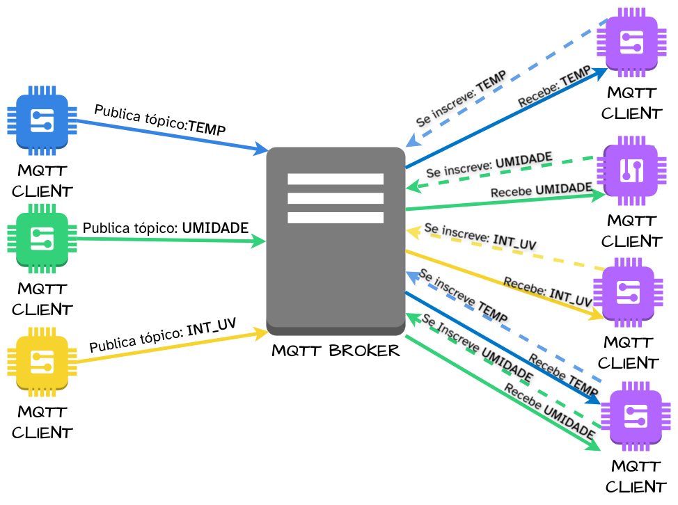
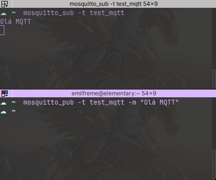

MQTT
O Protocolo MQTT nasce para aplicações IoT, e por isso conta com um pacote pequeno, assim é possivel diminuir o a quantidade de dados que trafega em nossa rede. Sua principal caracteristica é utilizar uma arquitetura de publicação/inscrição (publish/subscribe), isso permite uma grande desacoplamento entre os elementos que forma sua solução IoT.
Assim como a maioria dos protocolos TCP/IP, no MQTT também existe o modelo Cliente/Servidor, contudo os clientes não se comunicam diretamente com o servidor para solicitar e receber dados, como acontece no HTTP, temos um servidor MQTT que é um Broker atuando como intermediário ente os clientes. Os clientes, podem publicar mensagens em tópicos, ou se inscrever para receber mensagens de tópicos específicos. O Broker gerencia essa comunicação: recebe as mensagens publicadas e distribui para os clientes inscritos. Dessa forma não existe necessidade de quem publica saber quem se inscreve e vice-e-versa, garantindo um desacoplamento entre as partes de seu sistema.

MQTT Broker
Para fazer os teste iniciais, existem algumas soluções de MQTT Brokers
prontos que podemos utilizar, como o test.mosquito.org do projeto Eclipse
Mosquitto, broker.hivemq.com da plataforma HiveMQ, e broker.emqx.io da
plataforma EMQX, todos esses citados podem ser utilizado a fim de estudos e
testes, contúdo para a entrega de um projeto eles não devem ser utilizados.
Para fazer o deploy em projetos reails, existem diversas opções, como as plataformas já citadas, HiveMQ e EMQX, e também os grande players de cloud, como AWS (IoT Core), GCP (IoT Core) e Azure (IoT Hub) só para citar alguns que fornecem a solução do MQTT broker gerênciado em suas plataformas.
Também podemos configurar um broker localmente para testes, e para isso o Eclipse Mosquitto é uma das melhores opções, pois é leve, open-source e amplamente utilizado para desenvolvimento e validação de soluções MQTT.
MQTT Local: Mosquitto
Em um ambiente Linux, com suporte a snap, podemos instalar com o comando
sudo snap install mosquitto
Depois da instalação, o serviço do mosquitto já estará rodando, e poderemos
fazer a inscrição e envio de dados com os comandos mosquitto_sub e
mosquitto_pub respectivamente.

Da forma que está mostrado na captura de tela estamos criando uma inscrição e
uma publicação para o serviço MQTT que está rodando localmente, ou seja
localhost dentro da mesma máquina. Para acessar o serviço de outros
dispositivos dentro da mesma rede local, precisamos saber o IP do computador que
instalamos o Mosquitto. Caso esteja disponível na internet, utilizamos o
endereço público para esta conexão.
MQTT Client
Agora que já entendemos o papel o Broker, vamos olhar para os clientes, que é qualquer dispositivo que consiga se conectar à rede de internet ou local, a depender da sua solução. Em outras palavras, pode ser um computador, uma Raspberry Pi, uma ESP32, ou qualquer outro controlador de IoT com interface de rede e suporte ao protocolo MQTT.
Esses cliente que irão se inscrever ou publicar em tópicos, utilizando o Broker como intermediário.
Programa “MQTT Ping Pong” ESP32
#include <WiFi.h>
#include <PubSubClient.h>
// --- Configuration ---
// Update with your Wi-Fi credentials
const String ssid = "Wokwi-GUEST";
const String password = "";
// Update with your MQTT broker's address
const String client_id = "ef-esp32-pingpong-client";
const String mqtt_server = "broker.mqttdashboard.com";
const int mqtt_port = 1883;
// Define the MQTT topic for the ping-pong
const char* topic = "ef/esp32/pingpong";
// --- End of Configuration ---
int ping_pong_state = 0;
WiFiClient espClient;
PubSubClient client(espClient);
long lastMsg = 0;
char msg[50];
int value = 0;
// This function is called whenever a message arrives on a subscribed topic
void callback(char* topic, byte* payload, unsigned int length) {
Serial.print("Message arrived on topic: ");
Serial.print(topic);
Serial.print(". Message: ");
String message;
for (int i = 0; i < length; i++) {
message += (char)payload[i];
}
Serial.println(message);
if (message == "PING") {
Serial.println("Received PING...");
} else if (message == "PONG") {
Serial.println("Received PONG...");
}
}
// Reconnects to the MQTT broker if the connection is lost
void reconnect() {
// Loop until we're reconnected
while (!client.connected()) {
Serial.print("Attempting MQTT connection...");
// Attempt to connect
if (client.connect(client_id.c_str())) {
Serial.println("connected!");
// Subscribe to the topic
client.subscribe(topic);
Serial.print("Subscribed to topic: ");
Serial.println(topic);
if(ping_pong_state == 0){
// Publish the initial "PING" message to start the loop
client.publish(topic, "PING");
Serial.println("Send Ping");
ping_pong_state = 1;
}
else{
client.publish(topic, "PONG");
Serial.println("Send PONG");
ping_pong_state = 0;
}
} else {
Serial.print("failed, rc=");
Serial.print(client.state());
Serial.println(" try again in 5 seconds");
// Wait 5 seconds before retrying
delay(5000);
}
}
}
void setup() {
Serial.begin(115200);
// Connect to Wi-Fi
Serial.println();
Serial.print("Connecting to ");
Serial.println(ssid);
WiFi.begin(ssid, password);
while (WiFi.status() != WL_CONNECTED) {
delay(500);
Serial.print(".");
}
Serial.println("");
Serial.println("WiFi connected");
Serial.print("IP address: ");
Serial.println(WiFi.localIP());
// Configure MQTT client
client.setServer(mqtt_server.c_str(), mqtt_port);
client.setCallback(callback);
}
void loop() {
if (!client.connected()) {
reconnect();
}
// This allows the client to process incoming messages and maintain its connection
client.loop();
}
Programa “MQTT Ping Pong” No Node-Red

[{"id":"388440c46d7e221d","type":"tab","label":"Flow 1","disabled":false,"info":"","env":[]},{"id":"bcad16c131945d35","type":"mqtt in","z":"388440c46d7e221d","name":"","topic":"ef_nr_test","qos":"2","datatype":"auto-detect","broker":"1904db3f823efbe2","nl":false,"rap":true,"rh":0,"inputs":0,"x":320,"y":260,"wires":[["ab369d63761969a7"]]},{"id":"ab369d63761969a7","type":"debug","z":"388440c46d7e221d","name":"debug 1","active":true,"tosidebar":true,"console":false,"tostatus":false,"complete":"payload","targetType":"msg","statusVal":"","statusType":"auto","x":530,"y":260,"wires":[]},{"id":"d0d229874fb1161d","type":"mqtt out","z":"388440c46d7e221d","name":"","topic":"ef_nr_test","qos":"","retain":"","respTopic":"","contentType":"","userProps":"","correl":"","expiry":"","broker":"1904db3f823efbe2","x":540,"y":340,"wires":[]},{"id":"f7a36b9a52ff6386","type":"inject","z":"388440c46d7e221d","name":"","props":[{"p":"payload"},{"p":"topic","vt":"str"}],"repeat":"5","crontab":"","once":true,"onceDelay":0.1,"topic":"","payload":"Ping","payloadType":"str","x":330,"y":340,"wires":[["d0d229874fb1161d"]]},{"id":"1904db3f823efbe2","type":"mqtt-broker","name":"","broker":"localhost","port":1883,"clientid":"","autoConnect":true,"usetls":false,"protocolVersion":"5","keepalive":60,"cleansession":true,"autoUnsubscribe":true,"birthTopic":"","birthQos":"0","birthRetain":"false","birthPayload":"","birthMsg":{},"closeTopic":"","closeQos":"0","closeRetain":"false","closePayload":"","closeMsg":{},"willTopic":"","willQos":"0","willRetain":"false","willPayload":"","willMsg":{},"userProps":"","sessionExpiry":""}]